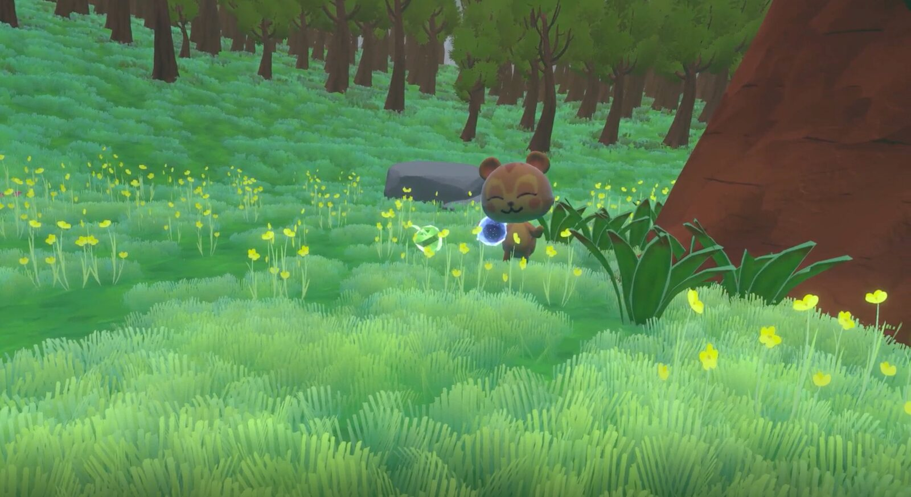
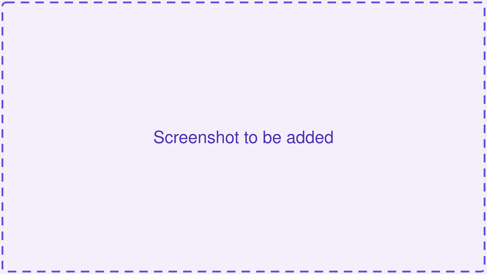

Apple Interaction
A woodland meadow where players freely throw and catch apples with an NPC squirrel whose mood-driven finite state machine controls its behaviour, such as offering, chasing and evading, and its expressions.

Overview
Two or three paragraphs: what this environment is, the interaction loop the participant goes through, and how it was designed to bring out PLAY. Keep it readable by someone who has not read the paper.
Inside the environment
The design features worth pointing at: the NPC and how it behaves, the scene, the player's actions, any adaptive or difficulty logic, and the key design decisions and why they were made.
Gallery

How it was tested
Within-subjects user study, 25 participants, questionnaires administered pre-tutorial, post-tutorial and post-affective. See the shared procedure for the instruments and what each one measures.
Anything specific to this environment's study: participant profile, session length, equipment, deviations from the shared procedure, analysis approach.
Results
2 of 7 parts met
- Valence (partly met)
- Arousal (partly met)
- Dominance (not met)
- Reciprocity (met)
- Sociality (not met)
- Joy (partly met)
- PLAY (met)
Filled: met. Half: partly met. Empty: not met.
The results in prose: which parts of PLAY were met and which were not, the key statistics behind each, and what the pattern means for this environment. Include a results figure if there is a good one.
Documents
| Document | Format |
|---|---|
| Final paper file to be added | |
| Literature review file to be added | |
| Virtual environment design specification file to be added |
Source code
Link to the compressed source archive for this environment, with a one-line note on what it contains and how to open it.